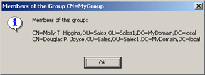

This topic explains how to add the static item Members to the context menu for the group objects viewed with the Active Roles snap-in. When you click Members, Active Roles displays a window that lists members of the selected group.
To add the context menu item, perform the following steps:
-
Copy the code for GroupMember.vbs below, open Notepad, paste the code into Notepad, save the file as C:\GroupMembers.vbs, and close Notepad.
-
Register the context menu item Members using the procedure in Registering the Static Context Menu Item below.
-
Restart the Active Roles snap-in.
Registering the Static Context Menu Item
After you save the sample code GroupMember.vbs in the file C:\GroupMembers.vbs, register the new context menu item with the following procedure.
To register the static context menu item in the group-Display DS
-
Choose the Raw mode for Active Roles snap-in display:
-
On the View menu, click Mode, and then in the View Mode dialog box, select the Raw Mode option and click OK.
-
-
In the console tree, expand the Configuration node, expand the Application Configuration node, expand Active Roles Display Specifiers (Custom), and then click the appropriate locale-specific container (for example, the locale container for US-English is 409). If the locale-specific container does not exist, create it with the appropriate procedure described in Display Specifiers.
-
In the details pane, right-click the display specifier group-Display, point to All Tasks and then click Advanced Properties. If the display specifier group-Display does not exist, create it with the appropriate procedure described in Display Specifiers.
-
Using the Advanced Properties dialog box, set the edsaEDMSContextMenu attribute to the following value: 1,&Members,C:\GroupMembers.vbs
-
Close the Advanced Properties dialog box.
Note: For the changes to take effect, restart the Active Roles Administration Service.
The Sample Code GroupMembers.vbs
Const ADS_EDMSERVER_BIND = 32768 Set oArg = WScript.Arguments AdsPath = oArg.item(0) Set openDS = GetObject("EDMS:") Set objGroup=openDS.OpenDSObject(AdsPath, _ "", "", _ ADS_EDMSERVER_BIND) on error resume next objGroup.GetInfoEx Array("member"),0 ss="Members of this group:" + vbNewLine + vbNewLine For Each member in objGroup.GetEx("member") ss = ss + member + vbNewLine Next ss = ss + vbNewLine + Cstr(nArg) MsgBox ss,vbInformation,"Members of the Group " + objGroup.Name
When you click Members in the group object's context menu, this code displays the Members of the Group window similar to the screen below. The window lists the distinguished names of members of the selected group.

 Related Topics
Related Topics{kind=link}